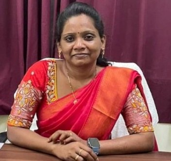

Leading with care and rigour.
Dr Anitha Jyothi Chili is a nursing educator and administrator with more than 17 years of teaching experience. She has worked at every level of a nursing college, from Nursing Tutor to Principal, and is known for student engagement, innovative teaching and a culturally sensitive learning environment.
She directly supervises academics, clinical training and, with the Managing Director, the college hostels.
Write to the Principal: principal@ahscollege.ac.in
“Every student carries a unique strength.”
Dr Anitha Jyothi Chili
Principal, AHS Nursing College & Hospital
Dear Students,
Welcome to AHS Nursing College & Hospital. Choosing nursing means choosing to stand beside people at the most important moments of their lives — a mother in labour, a child with a fever, an elderly patient who needs a gentle hand. It is a profession of skill, but above all it is a profession of compassion.
Our vision is to deliver world class, holistic and affordable healthcare, and to build an institution that grows people and new knowledge. In the classroom, that means teaching that follows the Indian Nursing Council curriculum while encouraging you to question, practise and think critically. In our skills and simulation labs, it means rehearsing every procedure until you are confident. And at our own AHS Global Hospital, it means learning at the bedside, with real patients, under the guidance of our doctors and nursing faculty.
Over seventeen years in nursing education I have learnt that every student carries a unique strength. My promise to you is simple: our faculty will know you by name, mentor you through every semester, and support you as you grow. We live by four values — compassion, transparency, innovation and inclusion — and we expect you to carry them into every ward and every community you serve.
Work hard, stay curious, and look after one another. Respect your patients, your teachers and your classmates, and remember that a safe, ragging-free campus is everyone's responsibility. My door is always open to you and to your parents.
I wish you a meaningful and successful journey at AHS Nursing College.
Education
- 2025Ph.D in NursingMalwanchal University, Indore
- 2010M.Sc Nursing (Child Health Nursing)Ikon College of Nursing, Bangalore · Rajiv Gandhi University of Health Sciences, Karnataka
- 2006B.Sc Nursing (4 years)St. Ann's College of Nursing · NTR University of Health Sciences, Andhra Pradesh
Career
- NowPrincipalAHS Nursing College & Hospital, Samastipur
- 2023PrincipalMadhubani Institute of Nursing and Paramedical Sciences, Bihar
- 2021 – 2023Vice PrincipalRavel College of Nursing
- 2019 – 2021ProfessorKIMS College of Nursing, Amalapuram
- 2014 – 2019Vice PrincipalDeepthi College of Nursing, Nalgonda
- 2012 – 2014Assistant ProfessorYashoda College of Nursing, Malakpet, Hyderabad
- 2010 – 2012LecturerS.K. College of Nursing, Kakinada
- 2006 – 2008Nursing TutorLaxmi College of Nursing
Expertise
Publications
IJCRT, Vol. 13, Issue 6 · June 2025
Effectiveness of demonstration on neonatal mask ventilation skills among GNM III year nursing students in a selected nursing college, Indore.
International Journal of Nursing and Health Research · July 2025
Video-assisted teaching programme on knowledge regarding neonatal mask ventilation among nursing officers in a selected hospital and research centre, Indore.
Books
Two books for nursing students: one on OSCE, and a Clinical Diary for nursing students.
Training, conferences & workshops
- Training of Trainers on Simulation Based Education, National Simulation Centre, SGT University, Gurugram (May 2025) — sponsored by the Indian Nursing Council
- Faculty Development Programme on “Transforming care with compassion”, Graphic Era Hill University (August 2025)
- PRERANA workshop on elevating teaching and clinical skills (May 2025)
- Resource person, workshop on Nursing Administration — from theory to practice
- Organiser and speaker, workshop on the Case Method; resource person, seminar on Diabetes
- Speaker, live webinar on global healthcare staffing challenges
Recognition
- Nominated for the Best Teacher award
- Received a Best Nursing College award from the Nursing Council (as head of a previous institution)
- Organised and took part in several National Health Programmes
Languages
English, Hindi and Telugu.
Ready to begin your nursing journey?
Admissions are open for ANM, GNM and B.Sc Nursing. Talk to our admission team today.